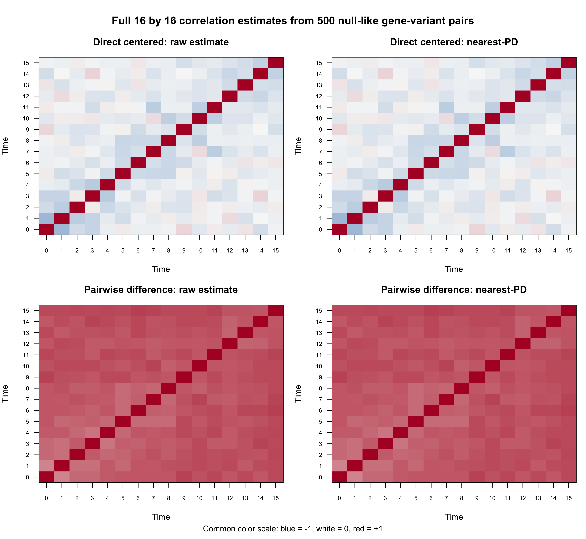
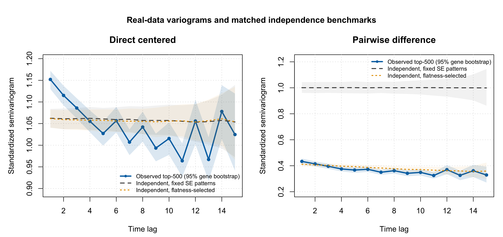
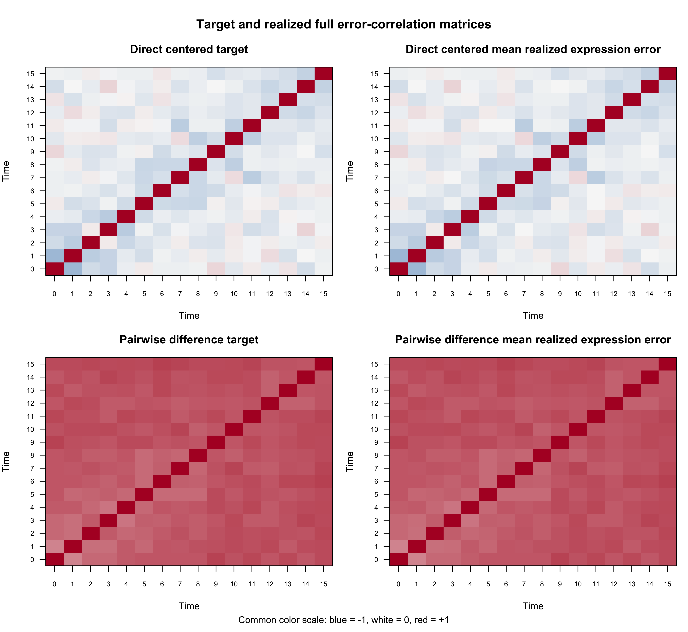
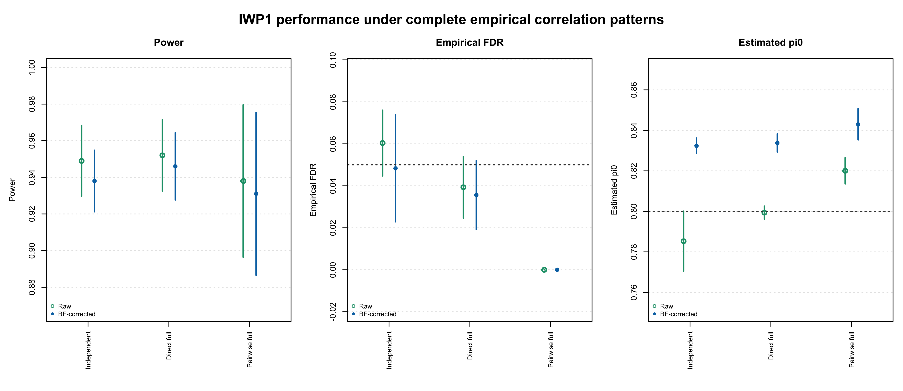
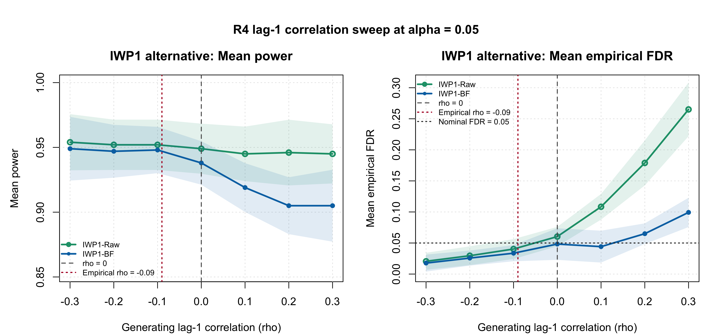
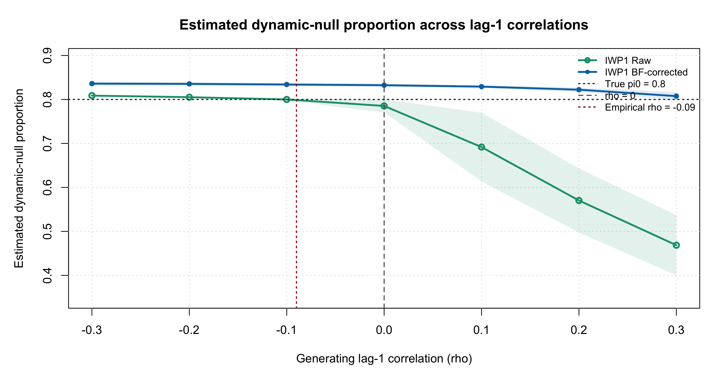

Last updated: 2026-08-07
Checks: 6 1
Knit directory: coderepo-local/
This reproducible R Markdown analysis was created with workflowr (version 1.7.2). The Checks tab describes the reproducibility checks that were applied when the results were created. The Past versions tab lists the development history.
The R Markdown is untracked by Git. To know which version of the R
Markdown file created these results, you’ll want to first commit it to
the Git repo. If you’re still working on the analysis, you can ignore
this warning. When you’re finished, you can run
wflow_publish to commit the R Markdown file and build the
HTML.
Great job! The global environment was empty. Objects defined in the global environment can affect the analysis in your R Markdown file in unknown ways. For reproduciblity it’s best to always run the code in an empty environment.
The command set.seed(20251109) was run prior to running
the code in the R Markdown file. Setting a seed ensures that any results
that rely on randomness, e.g. subsampling or permutations, are
reproducible.
Great job! Recording the operating system, R version, and package versions is critical for reproducibility.
Nice! There were no cached chunks for this analysis, so you can be confident that you successfully produced the results during this run.
Great job! Using relative paths to the files within your workflowr project makes it easier to run your code on other machines.
Great! You are using Git for version control. Tracking code development and connecting the code version to the results is critical for reproducibility.
The results in this page were generated with repository version 9fbd863. See the Past versions tab to see a history of the changes made to the R Markdown and HTML files.
Note that you need to be careful to ensure that all relevant files for
the analysis have been committed to Git prior to generating the results
(you can use wflow_publish or
wflow_git_commit). workflowr only checks the R Markdown
file, but you know if there are other scripts or data files that it
depends on. Below is the status of the Git repository when the results
were generated:
Ignored files:
Ignored: .DS_Store
Ignored: .Rhistory
Ignored: .Rproj.user/
Ignored: analysis/.DS_Store
Ignored: analysis/.Rhistory
Ignored: code/.DS_Store
Ignored: code/.Rhistory
Ignored: data/appendixB/
Ignored: data/dynamic_eQTL_real/
Ignored: data/toy_example/
Ignored: output/dynamic_eQTL_real/
Ignored: output/pdf/
Ignored: output/revision_simulations/
Untracked files:
Untracked: Rplots.pdf
Untracked: analysis/revision_balanced_variant_thinning.rmd
Untracked: analysis/revision_combined_spiky_genotype_simulation.rmd
Untracked: analysis/revision_correlated_error_simulation.rmd
Untracked: analysis/revision_functional_testing_simulation.rmd
Untracked: analysis/revision_genotype_level_simulation.rmd
Untracked: analysis/revision_internal_observational_null_set_pilot.rmd
Untracked: analysis/revision_internal_one_variant_per_gene_refit.rmd
Untracked: analysis/revision_internal_real_genotype_simulation.rmd
Untracked: analysis/revision_internal_targeted_broad_calibration.rmd
Untracked: analysis/revision_internal_zero_intercept_correlation.rmd
Untracked: analysis/revision_ld_tagging_switch_example.rmd
Untracked: code/00_eQTLs_CL.R
Untracked: code/01_fash_CL.R
Untracked: code/01_fash_CL.sbatch
Untracked: code/09_penalty_sensitivity.R
Untracked: code/09_penalty_sensitivity.sbatch
Untracked: code/revision_simulations/
Untracked: fash_prior_comparison_order1_after.pdf
Untracked: fash_prior_comparison_order1_after.png
Untracked: fash_prior_comparison_order1_before.pdf
Untracked: fash_prior_comparison_order1_before.png
Untracked: fash_prior_comparison_order2_after.pdf
Untracked: fash_prior_comparison_order2_after.png
Untracked: fash_prior_comparison_order2_before.pdf
Untracked: fash_prior_comparison_order2_before.png
Unstaged changes:
Modified: .gitignore
Modified: analysis/dynamic_eQTL_real.rmd
Modified: analysis/index.Rmd
Modified: analysis/nonlinear_dynamic_eQTL_real.Rmd
Modified: code/README.md
Modified: output/toy_example/toy_example_11.pdf
Modified: output/toy_example/toy_example_12.pdf
Modified: output/toy_example/toy_example_21.pdf
Modified: output/toy_example/toy_example_22.pdf
Note that any generated files, e.g. HTML, png, CSS, etc., are not included in this status report because it is ok for generated content to have uncommitted changes.
There are no past versions. Publish this analysis with
wflow_publish() to start tracking its development.
The FASH-IWP1 likelihood treats the 16 effect estimates within a trajectory as conditionally independent given its true effect function. The real data reuse the same donors at multiple times, so this assumption is not exact. This page asks three increasingly targeted questions:
-0.3 to 0.3?Only FASH-IWP1 before and after BF adjustment is reported. The purpose is to test whether the fitted method used in the main analysis is sensitive to moderate violations of its conditional-independence working model.
The BF-adjusted FASH fit contains more than one variant for many genes. To avoid allowing a gene with many variants to dominate the diagnostic, we first retain the variant with the highest BF-adjusted lfdr within each gene and then take the 500 representatives with the highest lfdr overall. The selected lfdr values range from 0.977 to 1.000.
For FASH-IWP1, a high lfdr supports a constant effect trajectory, not necessarily a zero effect. Two complementary full-matrix estimators are therefore considered.
For unit \(j\), let \(\widehat\beta_j(t)\) and \(s_j(t)\) be the effect estimate and the t-adjusted standard error supplied to FASH. We estimate its unknown constant effect by inverse-variance weighting,
\[ \widehat\mu_j = \frac{\sum_t \widehat\beta_j(t)/s_j^2(t)} {\sum_t 1/s_j^2(t)}, \qquad z_j(t)=\frac{\widehat\beta_j(t)-\widehat\mu_j}{s_j(t)}, \]
and compute the empirical correlation matrix across the 500 rows of \(z_j(t)\). This is a descriptive correlation of centered residual trajectories. Estimating and removing \(\widehat\mu_j\) itself induces negative dependence, so this matrix should not be interpreted as an uncentered error covariance.
An alternative removes the unknown constant without explicitly estimating it. For each time pair \((t,s)\), define
\[ a_j=s_j^2(t)+s_j^2(s),\qquad c_j=\frac{2s_j(t)s_j(s)}{a_j},\qquad q_j=\frac{\{\widehat\beta_j(t)-\widehat\beta_j(s)\}^2}{a_j}. \]
Under a constant truth and conditionally Gaussian errors with correlation \(R_{ts}\), \(E(1-q_j)=c_jR_{ts}\). We therefore use the through-origin method-of-moments estimate
\[ \widehat R_{ts}= \frac{\sum_j c_j(1-q_j)}{\sum_j c_j^2}. \]
Both symmetric estimates are projected to the nearest positive-definite correlation matrix before simulation.
plot_r4_real_data_correlation_heatmaps(real_analysis)
Figure R4.1: Real-data within-trajectory correlation diagnostics from 500 null-like one-pair-per-gene representatives. Panels distinguish the direct-centered and pairwise-difference estimators before and after nearest-positive-definite projection; color encodes correlation.
render_scrollable_table(
projection_table,
caption = paste(
"Table R4.1: Positive-definite projection diagnostics for the two",
"real-data 16 by 16 correlation estimates."
),
align = "lrrrrrr",
minimum_width = "980px"
)| Estimator | Raw minimum eigenvalue | Projected minimum eigenvalue | Maximum entry change | Frobenius change | Raw lag-1 correlation | Projected lag-1 correlation |
|---|---|---|---|---|---|---|
| Direct centered | 0.0987 | 0.0986637 | 0.000000 | 0.00000 | -0.152 | -0.152 |
| Pairwise difference | -0.0050 | 0.0000001 | 0.000715 | 0.00525 | 0.566 | 0.567 |
The direct matrix is already positive definite. The pairwise matrix has a slightly negative minimum eigenvalue, but nearest-PD projection changes any entry by at most 0.000715. Thus the projection enforces a valid generating matrix without materially changing its pattern.
The pairwise moment equation is valid before selecting unusually flat trajectories. Ranking by a dynamic-null lfdr is itself a selection on within-trajectory variation. To expose this ascertainment effect, we generated independent standard-normal errors with the observed SE patterns and compared:
render_scrollable_table(
benchmark_lag1_table,
caption = paste(
"Table R4.2: Observed lag-1 dependence and matched independent-error",
"benchmarks for the direct-centered and pairwise-difference estimators."
),
align = "lrrr",
minimum_width = "1080px"
)| Estimator | Observed correlation (95% gene-bootstrap CI) | Independent, fixed SE (95% interval) | Independent, flatness-selected (95% interval) |
|---|---|---|---|
| Direct centered | -0.152 [-0.172, -0.130] | -0.062 [-0.084, -0.041] | -0.062 [-0.082, -0.041] |
| Pairwise difference | 0.566 [0.545, 0.587] | -0.001 [-0.044, 0.039] | 0.589 [0.575, 0.603] |
For the direct estimator, observed lag-1 correlation is -0.152 [-0.172, -0.130], compared with -0.062 [-0.084, -0.041] under independent errors with the same centering and SE patterns. The additional short-lag negative dependence is therefore modest.
The raw pairwise estimate is strongly positive, 0.566 [0.545, 0.587], but the flatness-selected independence benchmark is already 0.589 [0.575, 0.603]. Consequently, the pairwise matrix is retained as a deliberately conservative full-matrix stress pattern, not presented as an unbiased estimate of the unselected residual correlation.
The conclusion is not driven by the t-to-normal SE adjustment. Inverting that adjustment gives the following lag-1 sensitivity:
render_scrollable_table(
se_sensitivity_table,
caption = paste(
"Table R4.3: Sensitivity of the real-data lag-1 diagnostics to the",
"t-to-normal standard-error scaling."
),
align = "llrr",
minimum_width = "700px"
)| Estimator | SE scale | Lag-1 correlation | Lag-1 semivariogram |
|---|---|---|---|
| Direct centered | t-adjusted | -0.152 | 1.152 |
| Pairwise difference | t-adjusted | 0.566 | 0.434 |
| Direct centered | raw regression | -0.153 | 1.153 |
| Pairwise difference | raw regression | 0.511 | 0.489 |
For a unit-diagonal correlation matrix, the standardized semivariogram at lag \(h\) is
\[ \gamma(h)=1-\frac{1}{16-h}\sum_{t=1}^{16-h}R_{t,t+h}. \]
The blue bands below are percentile intervals from 1,000 gene bootstraps. The gray and orange bands are 1,000 matched independent-error replications.
plot_r4_real_data_variograms(
real_analysis$bootstrap_lags,
real_analysis$independence_benchmark
)
Figure R4.2: Lag-specific real-data correlation and semivariogram diagnostics. Blue curves and bands are observed estimates with 95% gene-bootstrap intervals; grey and orange curves and bands are the two matched independent-error benchmarks identified in the in-figure legend.
The direct centered diagnostic shows its largest departure at lag 1 and moves toward its matched independence benchmark at longer lags, although the pattern is not exactly lag-1-only. The pairwise diagnostic is dominated by a broad positive common mode that is nearly reproduced by flatness selection under independence. These observations motivate testing both complete matrices first; the subsequent one-parameter sweep uses lag 1 as a parsimonious local sensitivity direction rather than as a fitted time-series model.
The full-matrix experiment reuses R1 without changing its scientific setting: 19 donors, 16 times, 1,000 variants, five PC-like covariates, and exact class counts of 200 random B-spline dynamic effects, 400 constant effects, and 400 zero effects. Thus the true dynamic-null proportion is \(\pi_0=0.8\).
At every time, Y ~ G + PC1 + ... + PC5 is fitted and the
genotype standard error receives the same t-to-normal correction used in
R1 and the real-data analysis. Within each seed, the independent,
direct-full, and pairwise-full conditions share the exact same genotype,
covariates, truth, nuisance effects, and Gaussian innovations. Only the
Cholesky transform of the expression errors changes.
correlation_matrices <- readRDS(file.path(
"output",
"revision_simulations",
"real_data",
"r4_null_like_top500_full_correlations",
"simulation_correlation_matrices.rds"
))
out <- run_genotype_level_bspline_eqtl_simulation(
n_donors = 19,
n_variants = 1000,
time_grid = 0:15,
n_covariates = 5,
class_probs = c(
dynamic_bspline = 0.20,
constant = 0.40,
zero = 0.40
),
expression_noise_sd = 1,
dynamic_main_effect_sd = 1,
seed = seed,
num_basis = 20,
expression_error_correlation = correlation,
save_outputs = FALSE
)plot_r4_full_matrix_target_realized(
full_configuration,
full_matrix_summary
)
Figure R4.3: Target and realized dependence in the paired R1 complete-matrix simulations. Panels distinguish independent, direct-centered, and pairwise-difference conditions and the relevant error scale; color encodes correlation.
render_scrollable_table(
full_lag1_table,
caption = paste(
"Table R4.4: Target and realized mean lag-1 correlations in the paired",
"complete-matrix R1 simulations."
),
align = "lrrrr",
minimum_width = "1120px"
)| Condition | Target lag-1 correlation | Expression error (95% MC CI) | Truth-known beta-hat error (95% MC CI) | Centered dynamic-null residual (95% MC CI) |
|---|---|---|---|---|
| Independent | 0.000 | -0.000 [-0.003, 0.003] | 0.002 [-0.008, 0.012] | -0.066 [-0.073, -0.059] |
| Direct centered full matrix | -0.152 | -0.152 [-0.156, -0.149] | -0.147 [-0.154, -0.140] | -0.155 [-0.159, -0.151] |
| Pairwise-difference full matrix | 0.567 | 0.566 [0.563, 0.570] | 0.562 [0.544, 0.580] | -0.210 [-0.214, -0.206] |
The realized expression-error and truth-known beta-hat error correlations track both complete targets closely. Centering the dynamic-null beta-hat trajectories again shifts the correlations, which is why the target matrix should not be compared directly with a post-centering diagnostic without reproducing the same operation.
plot_r4_full_matrix_metrics(
full_condition_alpha,
full_condition_pi0,
true_pi0 = 0.8,
nominal_alpha = 0.05
)
Figure R4.4: Power, empirical FDR, and estimated pi0 for paired R1 simulations using independent errors or either complete real-data-derived correlation matrix. Colors identify conditions and symbols identify raw versus BF-updated FASH in the in-figure legend; interval bars summarize five paired seeds.
render_scrollable_table(
full_results_table,
caption = paste(
"Table R4.5: Monte Carlo performance and paired changes for raw and",
"BF-updated IWP FASH under the complete correlation matrices."
),
align = "llrrrrrr",
minimum_width = "1450px"
)| Condition | Fit | Power (95% MC CI) | E[FDP] (95% MC CI) | Estimated pi0 (95% MC CI) | Power change vs independent | FDR change vs independent | pi0 change vs independent |
|---|---|---|---|---|---|---|---|
| Independent | Raw | 0.949 [0.930, 0.968] | 0.060 [0.045, 0.076] | 0.785 [0.770, 0.800] | Reference | Reference | Reference |
| Independent | BF-corrected | 0.938 [0.921, 0.955] | 0.048 [0.023, 0.074] | 0.832 [0.829, 0.836] | Reference | Reference | Reference |
| Direct centered full matrix | Raw | 0.952 [0.933, 0.971] | 0.039 [0.025, 0.054] | 0.799 [0.796, 0.803] | +0.003 [-0.003, +0.009] | -0.021 [-0.031, -0.012] | +0.014 [-0.000, +0.028] |
| Direct centered full matrix | BF-corrected | 0.946 [0.928, 0.964] | 0.036 [0.019, 0.052] | 0.834 [0.829, 0.838] | +0.008 [-0.005, +0.021] | -0.013 [-0.024, -0.001] | +0.001 [-0.002, +0.005] |
| Pairwise-difference full matrix | Raw | 0.938 [0.896, 0.980] | 0.000 [0.000, 0.000] | 0.820 [0.814, 0.826] | -0.011 [-0.042, +0.020] | -0.060 [-0.076, -0.045] | +0.035 [+0.019, +0.051] |
| Pairwise-difference full matrix | BF-corrected | 0.931 [0.887, 0.975] | 0.000 [0.000, 0.000] | 0.843 [0.835, 0.851] | -0.007 [-0.035, +0.021] | -0.048 [-0.074, -0.023] | +0.011 [+0.006, +0.016] |
For the primary BF-adjusted IWP1 fit, the direct full matrix changes power from 0.938 to 0.946 and empirical FDR from 0.048 to 0.036. The paired changes are +0.008 [-0.005, +0.021] for power and -0.013 [-0.024, -0.001] for FDR. Estimated pi0 is 0.834, compared with 0.832 under independence.
The selection-sensitive pairwise stress pattern is also conservative: its BF-adjusted power is 0.931, its mean realized FDP is 0.000, and its estimated pi0 is 0.843. Zero false discoveries in five replicates should be read as conservative behavior in this focused experiment, not as proof that the population FDR is exactly zero.
Thus neither complete matrix produces FDR inflation. The empirically relevant direct pattern yields essentially unchanged power and pi0, while the much stronger common-mode pairwise stress pattern is slightly less powerful and more conservative.
The complete-matrix results address the observed structures directly. To make the robustness boundary interpretable, we next vary only the first off-diagonal correlation,
\[ R_{tt}=1,\qquad R_{t,t+1}=R_{t+1,t}=\rho,\qquad R_{ts}=0\ \text{for }|t-s|>1, \]
over \(\rho\in\{-0.3,-0.2,\ldots,0.3\}\). This is a lag-1-only sensitivity model, not AR(1). The same five seeds and common innovations are used at every rho.
rho_grid <- seq(-0.3, 0.3, by = 0.1)
correlation_matrices <- lapply(
rho_grid,
function(rho) make_lag1_correlation(16, rho)
)plot_r4_correlation_sweep(
sweep_alpha_005,
empirical_rho = -0.09,
nominal_alpha = 0.05,
methods = c("FASH-IWP1-Raw", "FASH-IWP1-BF")
)
Figure R4.5: Power and empirical FDR across the lag-1-only correlation sweep. Curves identify raw and BF-updated IWP FASH in the in-figure legend; the vertical reference marks the approximate real-data direct-centered estimate and the horizontal FDR reference marks 0.05.
plot_r4_correlation_sweep_pi0(
sweep_pi0,
empirical_rho = -0.09,
true_pi0 = 0.8
)
Figure R4.6: Estimated dynamic-null proportion across the lag-1-only correlation sweep. Curves identify raw and BF-updated IWP FASH, the vertical reference marks the approximate real-data direct-centered estimate, and the horizontal reference marks the true pi0 of 0.8.
render_scrollable_table(
sweep_primary_table,
caption = paste(
"Table R4.6: BF-updated IWP FASH performance and paired changes across",
"the lag-1-only correlation sensitivity grid."
),
align = "rrrrrrr",
minimum_width = "1400px"
)| Generating rho | Realized beta-hat correlation (95% MC CI) | Power (95% MC CI) | E[FDP] (95% MC CI) | Estimated pi0 (95% MC CI) | Power change vs rho=0 | FDR change vs rho=0 |
|---|---|---|---|---|---|---|
| -0.3 | -0.286 [-0.293, -0.279] | 0.949 [0.924, 0.974] | 0.018 [0.004, 0.031] | 0.836 [0.831, 0.841] | +0.011 [-0.004, +0.026] | -0.031 [-0.052, -0.009] |
| -0.2 | -0.190 [-0.198, -0.182] | 0.947 [0.927, 0.967] | 0.026 [0.014, 0.038] | 0.835 [0.831, 0.839] | +0.009 [-0.000, +0.018] | -0.023 [-0.040, -0.005] |
| -0.1 | -0.094 [-0.103, -0.085] | 0.948 [0.930, 0.966] | 0.034 [0.021, 0.047] | 0.834 [0.830, 0.838] | +0.010 [+0.002, +0.018] | -0.015 [-0.029, -0.001] |
| 0.0 | 0.002 [-0.008, 0.012] | 0.938 [0.921, 0.955] | 0.048 [0.023, 0.074] | 0.832 [0.829, 0.836] | +0.000 [+0.000, +0.000] | +0.000 [+0.000, +0.000] |
| +0.1 | 0.098 [0.087, 0.109] | 0.919 [0.900, 0.938] | 0.044 [0.019, 0.070] | 0.829 [0.826, 0.833] | -0.019 [-0.029, -0.009] | -0.004 [-0.028, +0.019] |
| +0.2 | 0.194 [0.183, 0.205] | 0.905 [0.883, 0.927] | 0.065 [0.048, 0.082] | 0.822 [0.817, 0.827] | -0.033 [-0.043, -0.023] | +0.017 [-0.018, +0.051] |
| +0.3 | 0.291 [0.279, 0.302] | 0.905 [0.877, 0.933] | 0.099 [0.076, 0.123] | 0.808 [0.798, 0.817] | -0.033 [-0.046, -0.020] | +0.051 [+0.015, +0.087] |
Negative adjacent correlation is conservative in this setting. Near
the real-data direct estimate, rho = -0.1, BF-adjusted IWP1
has power 0.948, empirical FDR 0.034, and estimated pi0 0.834.
At mild positive correlation, rho = +0.1, power is
0.919, the paired power change is -0.019 [-0.029, -0.009], empirical FDR
is 0.044, and estimated pi0 remains 0.829.
Inflation becomes visible only as positive correlation grows. At
rho = +0.2, BF-adjusted empirical FDR is 0.065; at
rho = +0.3, it is 0.099, with paired change +0.051 [+0.015,
+0.087]. BF adjustment substantially attenuates this failure mode: at
rho = +0.3, Raw IWP1 FDR is 0.265, versus 0.099 after BF
adjustment.
The pi0 diagnostic tells the same story more sharply. At
rho = +0.3, the Raw estimate falls to 0.469, while the
BF-adjusted estimate remains 0.808, close to the true value 0.8.
Together, the diagnostics support a local robustness claim:
Several boundaries matter. The top-lfdr subset is selected for flatness, so the pairwise moment estimator is not unbiased after selection; its matched benchmark is shown explicitly. The direct matrix is a post-centering description rather than an identified raw covariance. Monte Carlo intervals use only five paired seeds and are therefore imprecise, especially for realized FDP. Finally, these experiments vary within-trajectory Gaussian correlation; they do not establish robustness to arbitrary dependence, non-Gaussian errors, or dependence across genes and variants.
The implementation is in the R4 correlation directory. Routine workflowr builds read the completed versioned caches and do not rerun the real-data bootstrap or Monte Carlo fits.
The real-data matrices can be regenerated with:
Rscript --vanilla \
code/revision_simulations/r4_correlated_errors/estimate_real_data_error_correlations.R \
--top-n 500 \
--bootstrap-reps 1000 \
--benchmark-reps 1000 \
--output-id r4_null_like_top500_full_correlationsThe paired complete-matrix experiment can be regenerated with:
Rscript --vanilla \
code/revision_simulations/r4_correlated_errors/run_full_empirical_correlation_mc.R \
--J 1000 \
--seed-list 12345,22345,32345,42345,52345 \
--output-id r4_full_empirical_correlations_top500_pilot5 \
--num-cores 4The lag-1 sweep with pi0 summaries can be regenerated with:
Rscript --vanilla \
code/revision_simulations/r4_correlated_errors/run_lag1_correlation_sweep.R \
--J 1000 \
--rho-list=-0.3,-0.2,-0.1,0,0.1,0.2,0.3 \
--seed-list 12345,22345,32345,42345,52345 \
--output-id r4_lag1_correlation_sweep_m0p3_to_p0p3_pi0_pilot5 \
--num-cores 4The versioned caches are:
output/revision_simulations/real_data/
r4_null_like_top500_full_correlations/
output/revision_simulations/mc/
r4_full_empirical_correlations_top500_pilot5/
r4_lag1_correlation_sweep_m0p3_to_p0p3_pi0_pilot5/
sessionInfo()R version 4.5.1 (2025-06-13)
Platform: aarch64-apple-darwin20
Running under: macOS Sequoia 15.6.1
Matrix products: default
BLAS: /System/Library/Frameworks/Accelerate.framework/Versions/A/Frameworks/vecLib.framework/Versions/A/libBLAS.dylib
LAPACK: /Library/Frameworks/R.framework/Versions/4.5-arm64/Resources/lib/libRlapack.dylib; LAPACK version 3.12.1
locale:
[1] C.UTF-8/C.UTF-8/C.UTF-8/C/C.UTF-8/C.UTF-8
time zone: America/Chicago
tzcode source: internal
attached base packages:
[1] stats graphics grDevices utils datasets methods base
other attached packages:
[1] workflowr_1.7.2
loaded via a namespace (and not attached):
[1] vctrs_0.7.3 httr_1.4.7 cli_3.6.6 knitr_1.50
[5] rlang_1.2.0 xfun_0.55 stringi_1.8.7 otel_0.2.0
[9] processx_3.8.6 promises_1.5.0 jsonlite_2.0.0 glue_1.8.1
[13] rprojroot_2.1.1 git2r_0.36.2 htmltools_0.5.9 httpuv_1.6.16
[17] ps_1.9.1 sass_0.4.10 rmarkdown_2.30 jquerylib_0.1.4
[21] tibble_3.3.0 evaluate_1.0.5 fastmap_1.2.0 yaml_2.3.12
[25] lifecycle_1.0.5 whisker_0.4.1 stringr_1.6.0 compiler_4.5.1
[29] fs_1.6.6 pkgconfig_2.0.3 Rcpp_1.1.1-1.1 rstudioapi_0.17.1
[33] later_1.4.4 digest_0.6.39 R6_2.6.1 pillar_1.11.1
[37] callr_3.7.6 magrittr_2.0.5 bslib_0.9.0 tools_4.5.1
[41] cachem_1.1.0 getPass_0.2-4